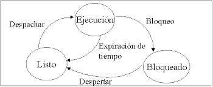

Los estados de un proceso obedecen a su participación y disponibilidad dentro del sistema operativo y surgen de la necesidad de controlar la ejecución de cada proceso.
Los procesadores sólo pueden ejecutar un solo proceso a la vez, turnándolos para el uso de este. Existen procesos no apropiativos o cooperativos que básicamente ocupan todo el tiempo del procesador hasta que ellos deciden dejarlo. Los procesos apropiativos son aquellos que ocupan por un período de tiempo el procesador hasta que una interrupción o señal llega al procesador para hacer el cambio de proceso, a esto se le conoce como cambio de contexto.

Los tres estados en los que se puede encontrar un proceso son:
Está usando la CPU en ese instante
Se denomina un ejecutable, este se detiene temporalmente para dejar que se ejecute otro proceso
No puede ejecutarse aunque haya una CPU disponible. (no puede ejecutarse sino hasta que ocurra cierto evento externo).